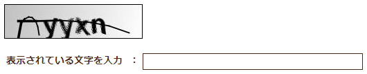

CAPTCHA Function Sample¶
Important
This sample uses a Nablarch 1.4 compliant API.
When combining with versions later than Nablarch 1.4 serie, customize as necessary.
This sample is an implementation sample of the authentication function by CAPTCHA, which is one of the security measures in web applications.
Important
The CAPTCHA used in this feature is known to be vulnerable and should not be used (possibility of image authentication being breached in a short period of time). Examine implementing a robust image authentication product (for example, Google reCAPTCHA (external site)) if image authentication is required.
Summary¶
CAPTCHA authentication is an authentication architecture used to verify that the responder is not a computer.
In this sample, an authentication image is generated in the business process, the user inputs the string drawn on the image, and authentication is performed by comparing the input string with the string in the image.
In general, CAPTCHA authentication process is often used prior to logging in.CAPTCHA implementation libraries often store the generated string in the session information and compare them with the input string.However, in Nablarch, as a general rule session information is generated after logging in, so it cannot be used.Therefore, in this sample, the management table on the database is used as a architecture of linking the input and generated strings.
Every time the CAPTCHA information is generated, the generated information is accumulated in the management table, so it becomes enlarged.Therefore, it is necessary to consider creating a batch that performs maintenance of the management table separately.
The following is a sample of the CAPTCHA information that is output using the sample.

In this sample, “kaptcha[1]” of the open source library is used for generating the CAPTCHA image.
| [1] | (1, 2) To learn more about kaptcha, visit the kaptcha site (https://code.google.com/p/kaptcha/) |
Structure¶
Shows the sample structure.
Acquisition and authentication of the CAPTCHA information is performed in the following procedure.
{kind=link}
The procedure for incorporating the Captcha function into the application is written in the link .
In the following, the processing performed on the business screen side (outside this sample) and the processing performed by this sample are explained.
Process performed on the business screen¶
When performing CAPTCHA authentication, the necessary processing on the business screen side is shown below.
When the authentication page is displayed¶
- Use the CaptchaUtil#generateKey in the authentication page display to acquire the Identification key.
When acquiring an authentication image¶
In the authentication page, issue an HTTP request (GET) to CaptchaGenerateHandler and acquire the image for authentication.
At this time, it is necessary to specify the identification key that was acquired during the authentication page display as a request parameter.The request parameter name is fixed with
captchaKey.Modify the source code to change the request parameter name.
When the authentication action is executed¶
- On the authentication page, send (POST) the identification key acquired at the time of display together with the input string.
- Use the CaptchaUtil#authenticate to authenticate within a business action.
Processing performed by this sample¶
The process performed by this sample when performing CAPTCHA authentication is shown below.
When the authentication page is displayed¶
- Generates the identification key of the CAPTCHA information and creates a record in the database.
When acquiring an authentication image¶
Generates the CAPTCHA information from the identification key (image and string described in the image) and updates the records on the database.
Returns the authentication image to the caller out of the generated CAPTCHA information.
At this time, the identification key acquired at the time of the authentication page display as the request parameter must be specified.The request parameter name is fixed with
captchaKey.Modify the source code to change the request parameter name.If image generation fails due to the specification of an invalid identification key, the response with the HTTP status 400 and an empty body is returned.
When the authentication action is executed¶
- Acquire the CAPTCHA information from the database using the identification key passed from the business action.
- Compare the retrieved information with the entered string and return the result to the caller.
Class diagram¶
{kind=link}
Responsibilities of each class¶
Class definition¶
a) Utility class
Class name Summary CaptchaGenerator A class that uses “kaptcha[1]” to generate the CAPTCHA information. CaptchaUtil Generates the identification key of the CAPTCHA information called from the business action.
Generate the CAPTCHA image using CaptchaGenerator called from CaptchaGenerateHandler and acquired from a system repository.
Compare the CAPTCHA information generated by calling from form, etc. with the input string.
b) Action class (handler)
Class name Summary CaptchaGenerateHandler Handler class that creates and returns a CAPTCHA image.
c) Other classes
Class name Summary Captcha Class that retains the generated CAPTCHA information. CaptchaDataManager Class that saves and reads the generated CAPTCHA information in the database.
Table definition¶
The definition of the CAPTCHA management table used in this sample is shown below.
CAPTCHA management (CAPTCHA_MANAGE)
The CAPTCHA management table contains the keys and generated strings of the generated CAPTCHA information. Since the image information is not used for determination, it is not stored.
Logical name Physical name Java type Limitations Identification key CAPTCHA_KEY java.lang.String Primary key CAPTCHA string CAPTCHA_TEXT java.lang.String Date and time of generation GENERATE_DATE_TIME java.sql.Timestamp
Tip
Only the attributes required for this sample are listed in the above table definition. In the Nablarch implementation project, design the table to meet the requirements, such as adding the required management information to the table.
How to Use¶
This section describes how to use the CAPTCHA function.
How to Use CaptchaUtil¶
This section describes how to use CaptchaUtil.
CaptchaUtil implements the following utility methods. Since the component name when retrieving the component from the system repository must be matched to each component name registered in How to configure the CaptchaGenerateHandler described below, the source code needs to be modified to register with a component name that is different from the above configuration example.
| Method | |
|---|---|
| generateKey | Generate an identification key and save it in the database.Also, return the generated identification key to the caller. RandomUUID of java.util.UUID is used to generate the identification key. Although the possibility of duplication is unlikely to be a practical problem, but if you want to use a more unique key and want to use another generation method then modify the source code. |
| generateImage | From the system repository, get captchaGenerator under the component name captchaGenerator, generate CAPTCHA information, and store it in the database. This method is used with CaptchaGenerateHandler and is not used from business actions. |
| authenticate | Use the identification key passed by the caller to retrieve the previously generated CAPTCHA information from the database. Compare the retrieved information with the entered string and return the result to the caller. |
How to configure the CaptchaGenerateHandler¶
This section describes how to configure the CaptchaGenerateHandler.
<!-- CaptchaGenerator configuration --> <component name="captchaGenerator" class="please.change.me.common.captcha.CaptchaGenerator"> <property name="imageType" value="jpg"/> <property name="configParameters"> <map> <entry key="kaptcha.textproducer.char.string" value="abcdegfynmnpwx" /> <entry key="kaptcha.textproducer.char.length" value="4" /> </map> </property> </component> <!-- CaptchaGenerateHandler configuration--> <component name="captchaGenerateHandler" class="please.change.me.common.captcha.CaptchaGenerateHandler"/> <!-- Handler queue structure --> <component name="webFrontController" class="nablarch.fw.web.servlet.WebFrontController"> <property name="handlerQueue"> <list> ～(Middle is omitted)～ <component class="nablarch.fw.RequestHandlerEntry"> <property name="requestPattern" value="/action/path/to/hoge"/> <property name="handler" ref="captchaGenerateHandler"/> </component> ～(Middle is omitted)～ </list> </property> </component>
For captchaGenerator components, the following property settings can be performed to control the contents of the generated string and the image format.
property name Settings imageType Define the format of the image to be generated.
The possible values are the values that can be retrieved by javax.imageio.ImageIO#getWriterFormatNames(). However, “wbmp” cannot be used.
If omitted, it will be “jpeg”.
configParameters Define the configuration value for kaptcha in Map format.
For more specific configurable values, visit the kaptcha site (https://code.google.com/p/kaptcha/wiki/ConfigParameters)
If omitted, all the set values become default values specified in kaptcha.
Precautions regarding the insertion position of the handler and settings for other handlers¶
A Captcha GenerateHandler generates CAPTCHA information and does not delegate processing to a subsequent handler in order to return an HTTP response. It is assumed that the RequestHandlerEntry is used to configure and use the request pattern, as in the above example.
In addition, as in the above example, when mapping under /action and acting as a single action, it is necessary to set additional settings for other handlers or change the contents of the request.
The following are some points to consider for other handlers included in the standard handler configuration of the web application runtime platform.
Database connection management handlers and transaction control handlers
CaptchaGenerateHandler stores management information in the database and needs to be placed after these handlers.
Nablarch custom tag control handler
GET request that does not include hidden item are considered as a tampering error by the hidden encryption function of Nablarch custom tag control handler.
This can be avoided by setting the request ID of this function in the noHiddenEncryptionRequestIds property of CustomTagConfig component.
Service availability check control handler
In order to implement it as an action, it is necessary to set the request ID and service operating state on the request table.
Permission check control handler
As described in the overview, since this function is expected to be used before login, it is necessary to set the request ID of this function in ignoreRequestIds property of authorization check handler.
How to acquire the CAPTCHA identification key¶
The following is an example implementation of the action to acquire the CAPTCHA identification key.
public HttpResponse xxxxx(HttpRequest request, ExecutionContext context) { XxxForm form = new XxxForm(); form.setCaptchaKey(CaptchaUtil.generateKey()); context.setRequestScopedVar("form", form); return new HttpResponse("/xxxx/xxxx.jsp"); }
How to acquire the CAPTCHA image¶
The following is an example of implementation of JSP to acquire the CAPTCHA image.
<n:form> <n:img src="/action/path/to/hoge?captchaKey=${form.captchaKey}" alt=""/> <n:plainHidden name="form.captchaKey"></n:plainHidden> <n:text title="Enter the character displayed" name="form.captchaValue" /> </n:form>
How to determine the input string¶
The determination of the input string is assumed to be called from the validation process of the action class or form class on the server side.
An example of implementation as a form class validation process is shown below.
@ValidateFor("xxxxxxxxxx") public static void validateForCaptcha(ValidationContext<XxxForm> context) { // Single item validation ValidationUtil.validate(context, new String[]{"captchaKey", "captchaValue"}); if (!context.isValid()) { return; } // CAPTCHA string determination XxxForm form = context.createObject(); if (!CaptchaUtil.authenticate(form.getCaptchaKey(), form.getCaptchaVal())) { context.addResultMessage("captchaValue", "MSG90001"); } }
How to retrieve a CAPTCHA image when an authentication error occurs¶
When an authentication error occurs, it is necessary to reacquire the authentication image and display it on the authentication screen. However, when an authentication error occurs, an exception is thrown and the transaction is rolled back, so there is a problem that information cannot be saved in the CAPTCHA management table even if an identification key is generated by an action.
Therefore, when an authentication error occurs, generate the identification key, and acquire the CAPTCHA image by the following method.
- Use internal forward to generate identification keys and display the CAPTCHA images.
Specify the action for displaying the authentication screen in the transition destination at the time of error of Action for performing authentication process. If an internal forward is used in a standard handler configuration, the internal forward action can be handled by another transaction, thus avoiding the problem of being rolled back.
An example is shown below.
// Authentication screen display process public HttpResponse index(HttpRequest request, ExecutionContext context) { // Generate an identification key and set it in the request scope context.setRequestScopedVar("captchaKey", CaptchaUtil.generateKey()); return new HttpResponse("/WEB-INF/view/login/index.jsp"); } // Authentication process // The authentication screen display action described above will be the transition destination when an error occurs @OnErrors({ @OnError(type = ApplicationException.class, path = "forward://index"), @OnError(type = AuthenticationException.class, path = "forward://index") }) public HttpResponse login(HttpRequest request, ExecutionContext context) { // Omit authentication process }